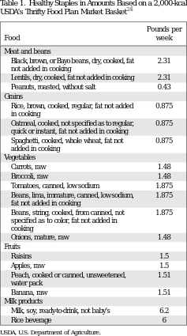

|

corpus-oa-validation/10.1016_j.amepre.2016.07.016/tables/table1/table.svg.png
|
| Food |
Pounds per week |
| Meat and beans |
|
| Black, brown, or Bayo beans, dry, cooked, fat |
2.31 |
| not added in cooking |
|
| Lentils, dry, cooked, fat not added in cooking |
2.31 |
| Peanuts, roasted, without salt |
0.43 |
| Grains |
|
| Rice, brown, cooked, regular, fat not added |
0.875 |
| in cooking |
|
| Oatmeal, cooked, not specifeid as to regular, |
0.875 |
| quick or instant, fat not added in cooking |
|
| Spaghetti, cooked, whole wheat, fat not |
0.875 |
| added in cooking |
|
| Vegetables |
|
| Carrots, raw |
1.48 |
| Broccoli, raw |
1.48 |
| Tomatoes, canned, low sodium |
1.875 |
| Beans, lima, immature, canned, low sodium, |
1.875 |
| fat not added in cooking |
|
| Beans, string, cooked, from canned, not |
1.875 |
| specifed as to color, fat not added in |
|
| cooking |
|
| Onions, mature, raw |
1.48 |
| Fruits |
|
| Raisins |
1.5 |
| Apples, raw |
1.5 |
| Peach, cooked or canned, unsweetened, |
1.51 |
| water pack |
|
| Banana, raw |
1.51 |
| Milk products |
|
| Milk, soy, ready-to-drink, not baby’s |
6.2 |
| Rice beverage |
6 |
corpus-oa-validation/10.1016_j.amepre.2016.07.016/tables/table1/table.svg.html
|